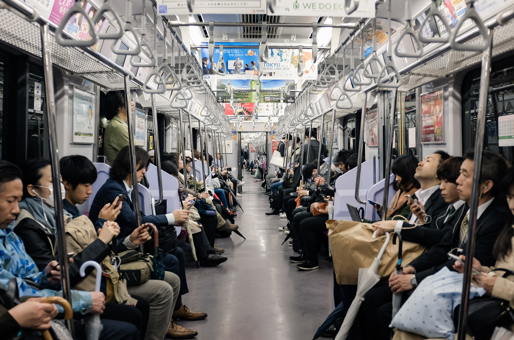

Transportation - Etiquette

In addition to general etiquette to have on transportation, here are some specific ones to keep in mind when
visiting Japan:
- If you need to sit while waiting inside a station, use one of the chairs provided. Do not squat or sit on the ground.
- Other than water, do not eat or drink while inside a bus or train (unless it is a shinkansen, in which case food is allowed.).
- Speak quietly and use headphones.
- Only use the priority seats when truly necessary.
- Be courteous of others boarding and leaving the train by making space when needed.
- Be wary of and do not participate in inappropriate activity on trains and buses. Unfortunately, sexual harassment on public transportation is a common issue in Japan.
- When using the escalator or stairs in Tokyo, stand on the left and walk on the right. In Osaka, stand on the right and walk on the left.
- When boarding a train, wait in the line for your train car of choice as indicated on the platform.
In contrast to what you should not do, here are a few things that are not frowned upon:
- You may sleep on the train or bus. In fact, this is quite common.
- Movement between train cars while the train is moving is allowed.
- Cellphone use is allowed in specific areas on trains.
- Smoking is allowed in designated areas within stations and on certain trains.
- If it is rush hour in the city, don't worry about standing to close to other people, as the trains can be very crowded to the point of passengers being pushed inside by the train attendants.